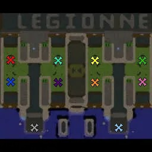

แผนที่
ผังแผนที่ของเวอร์ชัน 2.7 เลนสองข้าง ฐาน King อยู่กลาง

ยูนิต
ยูนิตที่ผู้เล่นสร้างเอง ค่าพลังชีวิต ดาเมจ ราคา และสายอัปเกรด
ครีป
ศัตรูที่เดินมาแต่ละรอบ ค่าพลังชีวิต เกราะ และจำนวนต่อรอบ
King
ค่าพลังชีวิต สกิล และการอัปเกรดของ King
กำลังรวบรวมข้อมูล
แพตช์ 2.7 ปรับค่า King ไปหลายจุด อ่านรายละเอียดได้ในหน้าแพตช์ก่อน
Wisp & Tree
ค่าของ Wisp และ Tree ที่ใช้ในเกม